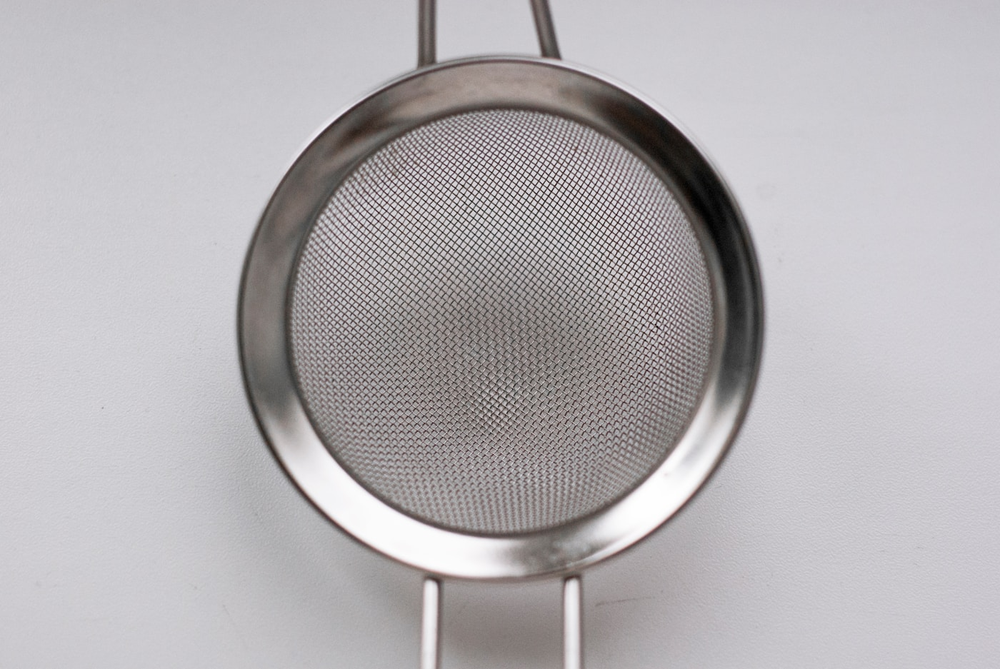

Did we actually agree with the agent?
An agent builds what we agreed on, the scenarios go green, and somewhere in the diff there is code no sentence of the agreement asked for. Either we forgot to say it, or the agent invented it, and from the outside those look the same. We work from a written description whose scenarios run as tests, and we would rather not read the code, so we need a way to ask the code whether it did what we said, and whether anything in it is loose from what we said. A technique from 1971 does it, once you point it away from its usual job. Mutation testing breaks the code one small change at a time and asks whether any test notices. Run it on the specification's tests alone, and every change that survives is either code the agreement does not need or behaviour the agreement never captured. Both are questions for the specification, not the code. What comes out is a list a designer can read, which survivors and why each lived, and behind it one question: how strongly did we agree, and did the agent agree with us.
The honest box. Photograph: Christopher Bill, on Unsplash.
We build from a description. What the system is supposed to do is written down where the whole team can read it, and the behaviour in it is written as Gherkin scenarios, which means the scenarios run. The arrangement is tighter than it sounds: a test exists because a sentence in the agreement exists, and for no other reason. Last week an agent built a feature from that description. The scenarios are green, the feature works, and somewhere in the diff there is code that no sentence of the agreement asked for. Either we forgot to say it and the agent quietly covered for us, or the agent invented it. From the outside the two look the same. Both are green. Neither was agreed.
Last month we wrote about the cost of shared understanding: producing code got cheap, agreeing on what to build did not, so keep the agreement written where everyone can read it and let the code become a box nobody needs to open, as long as you can still ask the box why. This is about one more question you should be able to ask it. Not why. Whether. Did you do what we said, and is anything in the code loose from it?
The itch
What has been nagging us is not test quality. It is divergence. An agreement goes into the model and functionality comes out, and in between there is a black box we cannot ask. We said we would rather not read the code. We still want proof, in the form of the behaviour that now exists, that the agreement was kept. An honest black box. One you can poke.
Anyone who works this way knows the feeling: you suspect the implementation drifted from what you meant, there is no cheap way to find out, so you read the diff after all, which is exactly what the box was supposed to spare you.
What seeing through would take
The first thing we already have: a faithful translation from agreement to tests, so that every sentence in the description has a test that fails when the sentence is false. Our weekly rebuild leans on it, and it is why the rest of this works at all. If tests get written on the side, or sentences go untested, nothing below means anything. And the scenarios have to be the only source of tests, or a survivor gets a third reading: specified somewhere else.
The second thing nobody asks for: would those tests notice if the code were different? Coverage cannot say. Coverage tells you which lines ran while the tests were green, not whether anyone was watching. A line can be executed by forty tests and changed with impunity if none of the forty asserts anything about what it did.
One small change. Photograph: Scott Rodgerson, on Unsplash.
A technique in one screen
Mutation testing makes one small change to your production code, flips a negation, deletes a line, swaps a string, and runs the tests that touch it against the result. That changed program is a mutant. If any test goes red, the mutant is killed. If none does, it survived. Then the code goes back, the next change goes in, and the tests run again.
A surviving mutant is a place where the code can be wrong and the suite does not care. Some changes alter nothing observable and survive for that reason; every tool produces a share of those, nobody agrees how large, no tool can tell you which, and sorting them is the work. The goal is simple to state: every survivor gets an explanation.
The tools generate the mutants from a long standard list; nobody writes them by hand. Your own tests deliver the verdict. If chaos engineering is chaos from the outside, this is chaos from the inside. It was first proposed in 1971, and engineers we consider very senior have never heard of it.
Lately it has had a small revival, attached to AI. Robert Martin, for one, ran mutation testing around the year 2000, overnight, because the suite took four minutes and he ran it several hundred times, and set it aside as impractical. Last winter he tried again with an agent, which does not care how boring the work is, and the run took half an hour instead of a night. Others say the barrier was never the run but the two days of setup, which an agent now does in an afternoon. Both are true, and neither is the point. Nothing in the mechanism changes because a model is nearby, and Martin's own mutation stage, he says, still takes a good long time. The reason to care now is different. What killed adoption was sorting the survivors by hand, and that is now agent work. What the sorting is for is the rest of this piece.
The pitch it usually travels under is that mutation testing is a quality review of your tests. The pitch is honest and it sticks.

Slack, not surplus. Photograph: Olga Kovalski, on Unsplash.
Turn it around
Point it at the agreement.
Run mutation testing on the specification-derived tests only. If a test did not come from a sentence in the description, it does not get a vote. Now every mutant the agreement can see should die, because the code exists to satisfy the agreement and every sentence of it is watching. The rest is the report.
When a mutant survives and actually changes behaviour, two explanations are worth the specification's time. Either the code it touched is inessential to the described behaviour, or the described behaviour and the actual behaviour differ. In the first case the agent built something we never asked for. In the second we asked for less than we meant. Either way the survivor lands on the specification's desk as a question: is something missing here, or did the implementation make something up? That is the opening again, this time with a mechanism behind it, and it is the moment the box becomes honest.
We had a run on the screen while we talked, and the survivors read this way once you look for it. A deleted line around an entity that, on inspection, should never have been there: inessential. A flipped negation that stayed green, in logic that obviously should have been covered: behaviour nobody wrote down. And two survivors traced to a mock returning an empty value by default, so the deletion was never observed. Those two are neither reading. They are a hole in the translation itself, and the method has to find those first.
There is a limit, and it should be said plainly. The method sees slack, not surplus. Code welded to required behaviour dies with it and is never seen: if the agreement says the applicant is notified and the agent notifies everyone, the mutant on that line is killed because the applicant stops being notified, and the other recipients were never probed. So the agreement has to say what must not happen as well. A cache is the example we argued over. It has no functional behaviour, so delete it and every scenario stays green; the survivor goes back for an explanation, and the explanation turns out to be a non-functional requirement nobody wrote down. The method noted the drift. It could not have guaranteed there was none, and strict test-first is the only discipline we know that can claim that. What it gives you is a good diff.
Where it sits
In exploration, when you build a proof of concept from a description, you are also proving the description. The survivors are the debt you want on the table before anyone commits to the design.
In production it compensates for the agent. The agent invents something; the report brings it back into plain language, as an extension the specification did not have and now has to accept or refuse. What comes out is a quality stamp on the thing just done, and it is a list a designer can read: which survivors, and why each lived. The percentage is a trend line.
Martin has arrived next door, and then walked the other way. He no longer reads what the agents write; he measures it, and the mutation tester is one of the instruments. He has also stopped writing specifications: he looks at the end result and says, well, that is the specification. We do the opposite. The agreement is the artefact we keep alive, so the measure moves one artefact up, from the tests to the agreement. The usual pitch asks what the quality of your tests is. This asks how strongly we agreed, and whether the agent agreed with us.
It may also explain an intuition nobody has put into words. People are eager for implementation tests in agentic workflows, and when asked why, they say things about safety. We think the eagerness is a suspicion that the agreement leaks, and a test suite is the nearest thing to hand for catching it.
What it costs
Every mutant needs a test run of its own, so the cause can be isolated. The tools trim each run to the tests that cover the change, and parallelism helps too. Neither changes the arithmetic: one run per mutant, and the run on our screen had 2329 mutants that compiled and was working on number 841 when we stopped watching.
Baselines make it affordable: results are saved from an earlier run, and later runs re-test only the mutants whose code or tests changed since. That needs somewhere to keep the runs, in some tools the feature is still marked experimental, and, in the words of the person who set it up, it is well worth it.
The jury is out. Photograph: Leonie Clough, on Unsplash.
The jury is out
This feels completely right, and we do not know yet, about this or about most of the toolbox we use. There are too few samples to know which techniques earn their time, and it is possible that mutation testing does exactly what we say and gives so little in the end that nobody bothers. Clever people are on the same track and the theory is old and sound. Neither is evidence. We are reporting an opening, not a result.
We said it at the start and it bears saying again: the premise carries the argument. If the translation from agreement to tests is loose, the survivors mean nothing in particular, and you are back to reading the diff. The method is only as honest as the seam it sits on.
The question, again
What if we wanted to see through how our agreement has been implemented? To ask the code, in a language everyone in the room can read, whether it did what we said and whether anything in it is loose from what we said, without opening it. A fifty-year-old technique, pointed at a purpose it was never designed for, gets you most of the way. The demo runs for free.